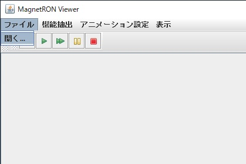
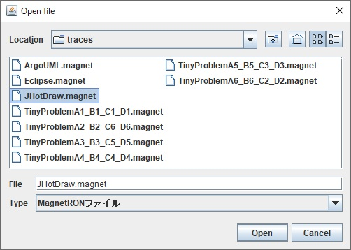
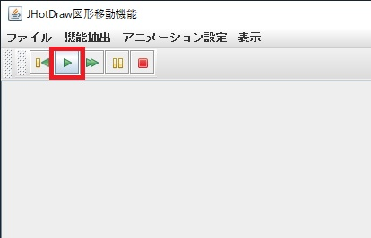
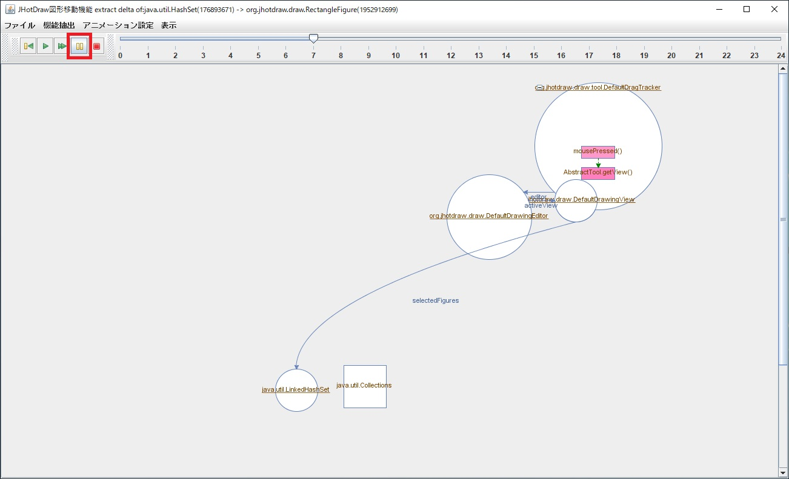
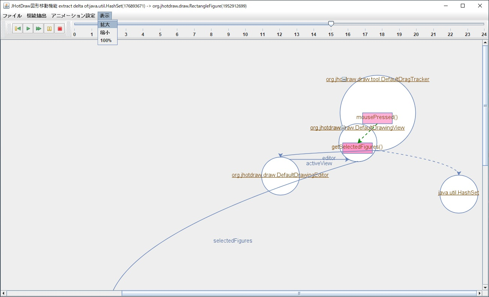

マグネトロンビューアについて
マグネトロンビューアは，メソッドの呼び出しや，フィールドによるオブジェクトの参照，引数や戻り値によるオブジェクトの受け渡しなど，
Javaプログラム実行時のオブジェクトの協調動作をアニメーションによって可視化するツールです．
マグネトロンビューアは，Windows Server 2019 の実験用サーバ上に用意しております．
各課題においてアニメーションによる可視化手法の評価を行う際に，リモートデスクトップからログインしてお使いください．
以下，マグネトロンビューアの操作方法の説明を行います．
-
実験用サーバにログインし，デスクトップ上に配置してあるマグネトロンビューア(MagnetRONViewer.jar)のアイコンをクリックして，マグネトロンビューアを起動してください．
-
マグネトロンビューアが起動すると以下のような画面になります．
-
マグネトロンビューアは，MagnetRON ファイルを読み込んで動作します．MagnetRON ファイルには，対象プログラムの実行時に収集したメソッド呼び出しや変数へのアクセスなどの時系列情報(実行トレース)と，実行トレースから各機能に関わる部分を抜き出すための抽出情報が記録されています．
ファイルメニューの「開く...」を選んで MagnetRON ファイルを開いてください．

-
MagnetRON ファイルは，デスクトップの traces フォルダ(C:\Users\userXX\Desktop\traces\)に入っています．MagnetRON ファイルは，アプリケーション毎に用意しております．
ここでは，JHotDraw.magnet を開いてください．これは，JHotDraw というオープンソースソフトウェアの実行時の情報を収集した MagnetRON ファイルです．

-
MagnetRON ファイルの読み込みには時間がかかる場合があります．ファイルの読み込みが完了するとメニューが操作できるようになります．課題に応じた機能を機能抽出メニューから選択します．
ここでは，JHotDraw 図形移動機能を選択しましょう．
-
機能の抽出が完了するとアニメーションを再生できるようになります．再生ボタンを押してアニメーションを再生してください．

-
アニメーションは一時停止したり再開したりすることができます．一時停止ボタンを押してアニメーションを一時停止しましょう．

-
一時停止中に巻き戻しボタンを押すと1つ前のフレームに戻ることができます．(ただし，アニメーションが進まないフレームもあるので注意して下さい．)
-
自動追跡モードを選ぶと，画面中の動いている部分を自動で追いかけながら再生するモードになります。
-
再び再生ボタンを押すと，アニメーションを再開することができます．
-
早送りボタンを押すたびに再生速度が上がります．最大で10倍速の再生が可能です．
-
アニメーション再生中に表示メニューを使ってアニメーション画面を拡大・縮小することも可能です．

-
実験中は，アニメーションを何度再生していただいても構いません．ソースコードと照らし合わせながら再生していただくようお願いします．
閉じる